import numpy as np
import pandas as pd
from itables import show
from IPython.display import YouTubeVideo, display, HTML
import ipywidgets as widgets
import pprint
import gensim
from gensim.parsing.preprocessing import *
import gensim.downloader as api
from nltk.stem import PorterStemmer, WordNetLemmatizer
from sklearn.feature_extraction.text import CountVectorizer, TfidfVectorizer
from sklearn.metrics.pairwise import cosine_similarity
from sklearn import manifold
from transformers import pipeline
import pyLDAvis
import pyLDAvis.gensim_models as gensimvis
import matplotlib.pyplot as plt
import plotly.express as px4 Natural Language Processing
4.1 Introduction
In our world, Natural Language Processing (NLP) is used in several scenarios. For example,
- phones and handheld computers support predictive text and handwriting recognition;
- web search engines give access to information locked up in unstructured text;
- machine translation allows us to understand texts written in languages that we do not know;
- text analysis enables us to detect sentiment in tweets and blogs.
But as we begin to explore Natural Language, we realise that it is an extremely difficult subject. Here are some specific points to note:
- Some words mean different things in different contexts, but us humans know which meaning is being used.
- He served the dish.
- In the following two sentences, the word “by” has different meanings:
- The lost children were found by the lake.
- The lost children were found by the search party.
- In the following cases, we (humans) can resolve what “they” is referring to, but it is not easy to generate a simple rule that a computer can follow.
- The thieves stole the paintings. They were subsequently recovered.
- The thieves stole the paintings. They were subsequently arrested.
- How can we get a computer to understand the following tweet?:
- “Wow. Great job st@rbuck’s. Best cup of coffee ever.”
Note
Can you catch all three jokes in the movie clip below? 🤣
4.2 Definitions
Before we go on, it would be useful to establish some terminology:
- A corpus is a collection of documents.
- Examples are a group of movie reviews, a group of essays, a group of paragraphs, or just a group of tweets.
- Plural of corpus is corpora.
- A document is a single unit within a corpus.
- Depending on the context, examples are a single sentence, a single paragraph, or a single essay.
- Terms are the elements that make up the document. They could be individual words, bigrams or trigrams from the sentences. These are also sometimes referred to as tokens.
- The vocabulary is the set of all terms in the corpus.
Consider the sentence:
I am watching television.The process of splitting up the document into tokens is known as tokenisation. The result for the above sentence would be
'I', 'am', 'watching', 'television', '.'How we tokenize and pre-process things will affect our final results. We shall discuss this more in a minute.
4.3 Overview of Applications
Here are some of the use-cases that we shall discuss:
- Topic Modeling: This is an unsupervised technique that allows us to identify the salient topics of a new document automatically. This could be useful in a customer feedback setting, because it would allow quick allocation or prioritisation of resources. This approach requires one to decide on the number of topics. It typically also requires some study of the topics in order to interpret and verify them.
- Information Retrieval: This is also an unsupervised approach. If the new document can be considered a “query”, then this can be used to retrieve and prioritise documents that are relevant to the query.
- Sentiment Analysis: Using a lexicon of words and their tagged sentiments, we can assess whether the sentiment in a document is mostly positive or negative.
4.4 Text Pre-processing
Example 4.1 (Example: Wine Reviews Dataset)
A dataset containing wine reviews is accessible from Kaggle. We shall work with one of the csv files. It contains 130,000 rows, although some are duplicates.
rng = np.random.default_rng(5001)
wine_reviews = pd.read_csv("data/winemag-data-130k-v2.csv", index_col=0)
wine_reviews.drop_duplicates(inplace=True)
pp = pprint.PrettyPrinter(indent=4, compact=True,)
for x in rng.choice(wine_reviews.description, size=5):
pprint.pp(x)('Bell pepper and sharp red fruit aromas provide a shaky start, which is '
'followed by cranberry, tart cherry and other pointed flavors. The feel is '
'racy and tight, with gritty acids. Airing does improve it somewhat. Tasted '
'twice; this is a review of the better bottle. Cabernet, Merlot, Cab Franc '
'and Carmenère is the blend. From Brazil.')
('Consistent with previous releases, this Michel Rolland effort is a soft, '
'silky, smoky wine that introduces itself with round cherry fruit and then '
'charges ahead with layers of licorice, citrus, coffee and rock that enliven '
'the finish. There is plenty of tart raspberry fruit to open, and the '
"balancing acids to give the wine a tight core. It's a very polished and "
'appealing balance of forward, approachable fruit married to more elegant, '
'ageworthy tannins and acids.')
("This is a light and soft selection, with an upfront gamy note that's framed "
'by soft strawberry, rhubarb, red cherry and currant fruit tones on the nose '
"and mouth. Overall, it's short and direct; drink up.")
('Fresh, clean and easy, this would taste great at an outdoor pool party or '
'during a sunny lunch outdoors. It delivers fresh crispness, with lingering '
'tones of green apple and passion fruit.')
('This easy-drinking wine has a bouquet of honeydew melon and lime juice. '
'Flavors of lemon, tangerine, guava and white peach with a soft hint of '
'baking spice continue into the finish, which is marked by flavors of stone '
'fruits and nutmeg.')The “descriptions” column contains the review for a particular wine by a user, whose name and twitter handle are provided. Also included is information such as the price, originating county, region of the wine, and so on. In our activity, we are going to apply NLP techniques to the wine reviews.
Pre-processing Text with Gensim
Text documents consist of sentences of varying lengths. Usually, the first step to analysing a document is to break it up into pieces. This process is known as tokenizing. When tokenizing a document, we can do it at several levels of resolution: at the sentence, line, word or even punctuation level.
Tokenizing can easily done using the .split() within built-in python. But after that, we need to further pre-process the tokens.
The gensim package includes a module for pre-processing text strings. Here is a list of some of the functions there:
strip_multiple_whitespacesstrip_non_alphanumstrip_numericstrip_punctuationstrip_short
Since what we are about to do in the initial part of our activity is based on frequency counts of tokens, apart from some of the above steps, we are also going to remove common “filler” words that could end up skewing the eventual probability distributions of counts. These filler words are known as stop words. They were identified by linguists, and they vary from model to model, from Python package to package, and of course, from language to language.
Whether stop-word removal is meaningful or not also depends on your particular application. At times, it is only done in order to speed up the training of a model. However, it is possible to change the entire meaning of a sentence by removing stop-words.
For us, we are going to apply this list of filters to each review:
strip_punctuation(),strip_multiple_whitespaces(),strip_numeric(),remove_stopwords(),strip_short(),lemmatize()
Lemmatizing a word is to reduce it to its root word. You will come across stemming whenever you read about lemmatizing. In both cases, we wish to reduce a word to its root word so that we do not have to deal with multiple variations of a token, such as ate, eating, and eats.
When we stem a word, the prefix and/or suffix will be removed according to a set of rules. Since it is primarily rule-based, the resulting word may not be an actual English word.
Like stemming, lemmatizing also aims to reduce a word to its root form. However, it differs from stemming in that the final word must be a proper English language word. For this purpose, the algorithm has to be supplied with a lexicon or dictionary, along with the text to be lemmatized.
Here is an example that demonstrates the differences.
porter = PorterStemmer()
wn = WordNetLemmatizer()
demo_sentence = 'Cats and ponies have a meeting'.split()
demo_sentence['Cats', 'and', 'ponies', 'have', 'a', 'meeting']['cat', 'and', 'poni', 'have', 'a', 'meet']Now let us go ahead and perform the pre-processing on the wine reviews.
CUSTOM_FILTER = [lambda x: x.lower(), strip_punctuation,
strip_multiple_whitespaces, strip_numeric,
remove_stopwords, strip_short]
#CUSTOM_FILTER[1]
all_review_strings = wine_reviews.description.values
#all_review_strings[:3]
all_strings_tokenized = [preprocess_string(x, CUSTOM_FILTER) for x in all_review_strings]Here is an example of the pre-processed review:
[ 'ripe', 'fruity', 'wine', 'smooth', 'structured', 'firm', 'tannins',
'filled', 'juicy', 'red', 'berry', 'fruits', 'freshened', 'acidity',
'drinkable', 'certainly', 'better']At this point in time, what we have is a list of lists. Each sub-list contains the tokens for a particular wine_review. For instance, the original review for row 234 was:
('There is an odd, piercing edge to the aromas, a mix of acetic acid and '
"pungent herb, with a hint of diesel. Somehow it's not off-putting, just "
'atypical. The light, tart fruit is a mix of rhubarb and cranberry, very '
'earthy and tasting of dirt and bark in the finish. This could be quite '
'pleasant with a hearty, rustic dish such as beef Bourgogne.')
[ 'odd', 'piercing', 'edge', 'aromas', 'mix', 'acetic', 'acid', 'pungent',
'herb', 'hint', 'diesel', 'putting', 'atypical', 'light', 'tart', 'fruit',
'mix', 'rhubarb', 'cranberry', 'earthy', 'tasting', 'dirt', 'bark',
'finish', 'pleasant', 'hearty', 'rustic', 'dish', 'beef', 'bourgogne']gensim does not have a lemmatizer, so we use the nltk lemmatizer on each token.
4.5 Representation of Text
Tokenisation of the corpus is merely the first step in processing natural language. All mathematical algorithms work on numerical representations of the data. Hence the next step is to convert the text into numeric representations. In natural language, there are two common ways of representing text:
- Sparse vectors, using tf-idf or PPMI, or
- Dense embeddings, which could result from word2vec, GLoVe, or from neural models.
Sparse embeddings with Tf-idf
In this section, we demonstrate how we can use Tf-idf (Term frequency-Inverse document frequency) to create vector representations of documents. Consider the following set of three simple text documents. Each document is a single sentence.
raw_docs =[
"Here are some very simple basic sentences.",
"They won’t be very interesting , I’m afraid. ",
"""
The point of these basic examples is to learn how basic text
counting works on *very simple* data, so that we are not afraid when
it comes to larger text documents. The sentences are here just to provide words.
"""] As the name tf-idf suggests, our first step should be to compute the frequency of each term (token) within each document.
vectorizer1 = CountVectorizer(stop_words='english', min_df=1)
X1 = vectorizer1.fit_transform(raw_docs)
print(pd.DataFrame(X1.toarray(),
columns=vectorizer1.get_feature_names_out()).iloc[:, :10]) afraid basic comes counting data documents examples interesting \
0 0 1 0 0 0 0 0 0
1 1 0 0 0 0 0 0 1
2 1 2 1 1 1 1 1 0
just larger
0 0 0
1 0 0
2 1 1 The counts indicate the number of times each feature (or words) were present in the document. As you might observe, longer documents tend to contain larger counts (see document 3, which has many more 1’s and even a couple of 2’s. Thus, instead of dealing with counts, we shall convert each row into a vector of length 1. Words that appear in all documents will be weighted down by this transformation, since these do not help to distinguish the document from others. This transformation is known as the TF-IDF transformation.
Instead of the raw counts, we define:
- \(N\) to be the number of documents (\(N=3\) in the little example above).
- \(tf_{i,j}\) to be the frequency of term \(i\) in document \(j\).
- \(df_{i}\) to be the frequency of term \(i\) across all documents.
- \(w'_{i,j}\) to be:
\[\begin{equation} w'_{i,j} = tf_{i,j} \times \left[ \log \left( \frac{1 + N}{1 + df_{i}} \right) + 1 \right] \end{equation}\]
Then the final \(w_{i,j}\) for term \(i\) in document \(j\) is the normalised version of \(w'_{i,j}\) across the terms that document.
Consider the word “sentences”, in document id 02 (the third document).
- \(N = 3\)
- \(tf_{i,j} = 1\)
- \(df_{i} = 2\)
Thus
\[\begin{equation} w'_{ij} = 1 \times \log ( (1+3)/(1 +2)) = 1.287 \end{equation}\]
vectorizer2 = TfidfVectorizer(stop_words='english', norm=None)
X2 = vectorizer2.fit_transform(raw_docs)
print(pd.DataFrame(X2.A,
columns=list(vectorizer2.get_feature_names_out())).iloc[:, :10].round(3)) afraid basic comes counting data documents examples interesting \
0 0.000 1.288 0.000 0.000 0.000 0.000 0.000 0.000
1 1.288 0.000 0.000 0.000 0.000 0.000 0.000 1.693
2 1.288 2.575 1.693 1.693 1.693 1.693 1.693 0.000
just larger
0 0.000 0.000
1 0.000 0.000
2 1.693 1.693 The final step normalises the weights across each document, so now the weight for sentences in document 00 is higher than the weight in document 02 since document 00 is shorter.
vectorizer3 = TfidfVectorizer(stop_words='english')
X3 = vectorizer3.fit_transform(raw_docs)
print(pd.DataFrame(X3.A,
columns=list(vectorizer3.get_feature_names_out())).iloc[:, :10].round(3)) afraid basic comes counting data documents examples interesting \
0 0.000 0.577 0.000 0.000 0.000 0.000 0.000 0.000
1 0.474 0.000 0.000 0.000 0.000 0.000 0.000 0.623
2 0.170 0.340 0.223 0.223 0.223 0.223 0.223 0.000
just larger
0 0.000 0.000
1 0.000 0.000
2 0.223 0.223 The above matrix is known as a document-term matrix, since the columns are defined by terms, and each row is a document. At this point, we can use each row as a vector representation of each document. If necessary, for this corpus, we could even represent each term using its corresponding column.
Note that some books/software use a slightly different convention - they may work with the term-document matrix. However, the idea is the same. Take a look at the following term-document matrix, assembled from the complete works of Shakespeare:
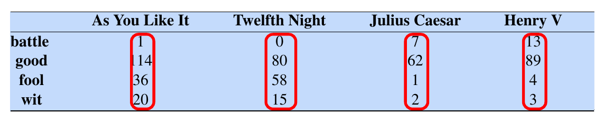
If we intend to represent each document as a numeric vector, the columns, highlighted by the red boxes, would be a natural choice. Suppose we only focus on the coordinates corresponding to the words battle and fool. Then a visualisation of the documents would look like this:
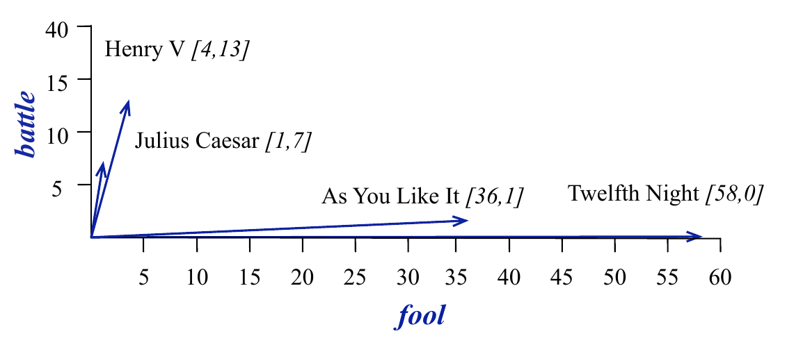
Visually, it is easy to tell that “Henry V” and “Julius Caesar” are similar (they point in the same direction) as opposed to “As You Like It” and “Twelfth Night”. But it is also easy to see why - the former two contain similar high counts of battle compared to the latter two, which are comedies.
Tf-idf are a normalised version of the above raw counts; they provide a numerical representation of documents, adjusting for document length and words that are common across all documents in a corpus.
Cosine similarity
In order to quantify the similarity (or nearness) of vector representations in NLP, the common method used is cosine similarity. Suppose that we have a vector representation of two documents \(\mathbf{v}\) and \(\mathbf{w}\). If the vocabulary size is \(N\), then each of the vectors is of length \(N\). Since we are dealing with counts the coordinate values of each vector will be non-negative. We use the angle \(\theta\) between the vectors as a measure of their similarity:
\[ \cos \theta = \frac{\sum_{i=1}^N v_i w_i}{\sqrt{\sum_{i=1}^N v_i^2} \sqrt{\sum_{i=1}^N w_i^2}} \]
Geometrically, cosine similarity measures the size of the angle between vectors:
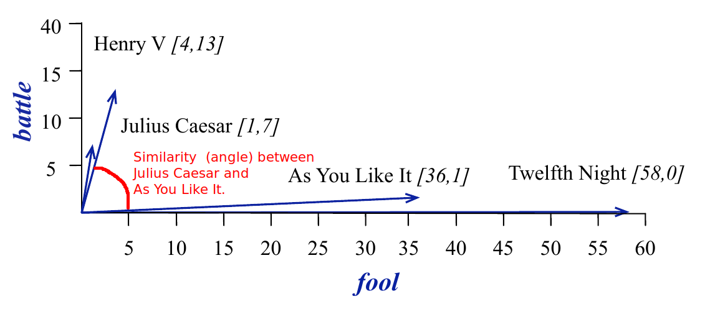
Dense Embeddings
One of the drawbacks of sparse vectors is that they are very long (the length of the vocabulary), and most entries in the vector will be 0. As a result, researchers worked on methods that would pack the information in the vectors into shorter ones. Instead of working on representations of the documents, the methods aimed to create representations of each token (or word) in the vocabulary. These are referred to as embeddings.
Here, we shall discuss word2vec (Mikolov et al. (2013)), but take note that there are others. GLoVe (Pennington, Socher, and Manning (2014)) was invented soon after, but the most common embeddings used today arise from Deep Learning models. The most widely used version is BERT (see the video references below, as well as Devlin et al. (2019)).
The approach in word2vec deviates considerably from tf-idf, in that the goal is to obtain a numeric representation of a word, in the context of it’s surrounding words. Consider this statement:
13% of the United States population eats pizza on any given day. Mozzarella is commonly used on pizza, with the highest quality mozzarella from Naples. In Italy, pizza served in formal > settings is eaten with a fork and knife.
The words eats, served and mozzarella appear close to pizza. Hence another word that appears in similar contexts, should be similar to pizza. Examples could be certain baked dishes or even salad.
To achieve such a representation, word2vec runs a self-supervised algorithm, with two tasks:
- Primary task: To “learn” a numeric vector that represents each word.
- Pretext task (stepping stone): To train a classifier that, when given a word \(w\), predicts nearby context words \(c\).
Self-supervised algorithms differ from supervised algorithms in that there are no labels that need to be created. The pre-text task trains a model to perform predictions, based on a sliding window context:
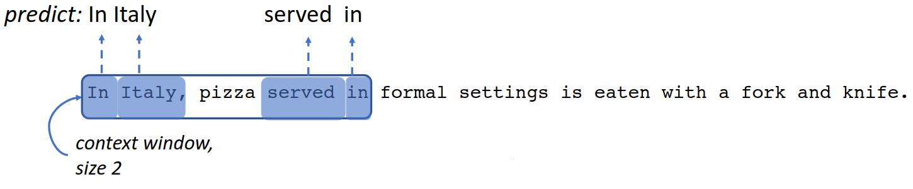
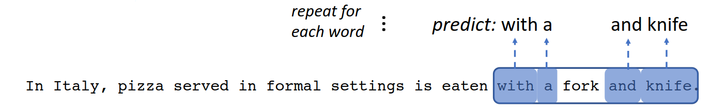
Starting with an initial random vector for each word, the algorithm updates the vectors as it proceeds through the corpus, finally ending up with an embedding for each word that reflects its semantic value, based on neighbouring words.
In NLP, the quality of an embedding can be evaluated using an analogy task:
Given X, Y and Z, find W such that W is related to to Z in the same way that X is related to Y.
For instance, if we are given the pair man:king, and the word woman, then the embedding should return queen, since woman:queen in the same way that man is related to king. Geometrically, the answer to the analogy is obtained by adding (king - man) to woman. The nearest embedding to the result, is returned as the answer.
On the left are examples of the types of analogy pairs that word2vec is able to solve, while on the right, we have visualisations of GLoVe.
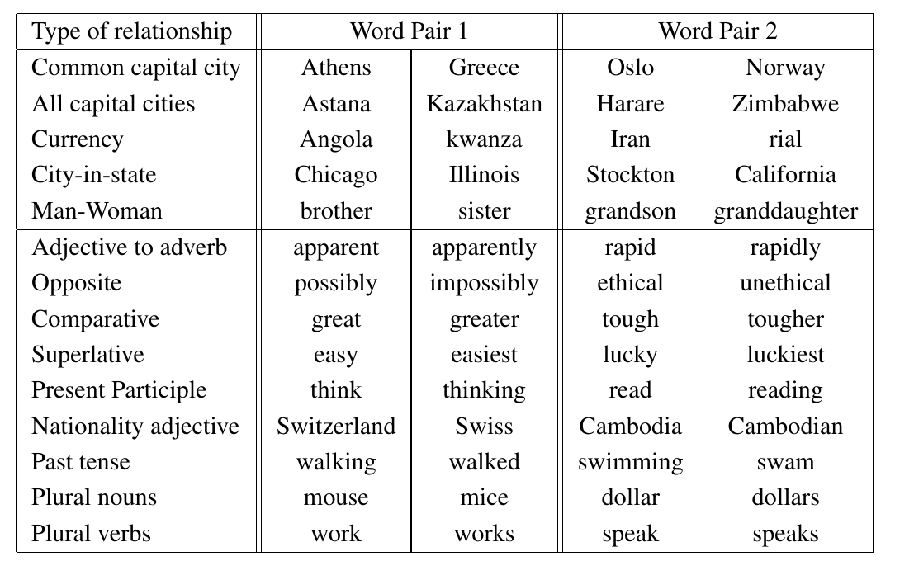
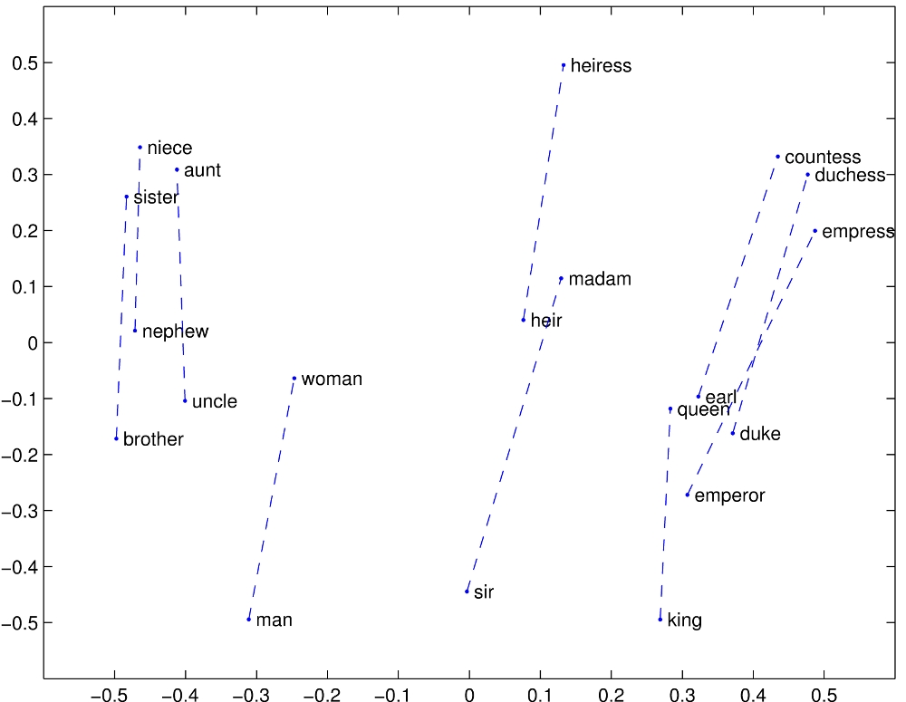
Here’s how we can use gensim code to conduct the analogy task.
# load pre-trained word-vectors from gensim-data
word_vectors = api.load("glove-wiki-gigaword-100")
# Check the "most similar words", using the default "cosine similarity" measure.
result = word_vectors.most_similar(positive=['woman', 'king'], negative=['man'])
most_similar_key, similarity = result[0] # look at the first match
print(f"{most_similar_key}: {similarity:.4f}")queen: 0.76994.6 Visualisation with t-SNE
When compared with sparse embeddings, dense embeddings are compact. However, a more important difference is that dense vectors represent the semantic meaning of the words. This means that vectors that are close to each other are similar in meaning. Let us use t-SNE to visualise the GloVe embeddings.
There are a total of 400,000 vectors in the embedding. Even with t-SNE that will be difficult to make sense of. Hence for now, we sample a set of 100 to visualise them.
rng1 = np.random.default_rng(1111)
nn = 1000
id = rng1.choice(len(word_vectors), size=(nn,), replace=False)
X = np.zeros((nn, 100))
for ii in np.arange(nn):
#X[ii,] = glove_vectors.get_vector(id[ii])
X[ii,] = word_vectors.get_vector(ii)
labels = pd.Series([word_vectors.index_to_key[x] for x in np.arange(nn)])
tsne1 = manifold.TSNE(n_components=2, init="random", perplexity=10, metric='cosine', verbose=0, max_iter=5000, random_state=222)
X_transformed2 = tsne1.fit_transform(X)You should get the same plot as us since we have set the same seed at the start of the cell, and when we initialise the transformer. Explore the resulting plot - notice how months of the year appear close together at the bottom left. Around the left as well, the calendar years appear as a group.
(The figure below only appears in the html version of the text)
df2 = pd.DataFrame(X_transformed2, columns=['x','y'])
df2['labels'] = labels
fig = px.scatter(df2, x='x', y='y', text='labels', width=1024, height=960)
fig.update_traces(textposition='top center')
fig.show()
Note
Would we be able to make such a plot using tf-idf? Why or why not?
4.7 Neural Language Models
Language is complex. It is incredible how we can understand such long paragraphs of texts with such ease. We somehow seem to have learnt complicated sets of grammar and syntax just by listening to others speak. To get a machine to learn language has not been easy. It is only recently that Large Language Models such as chatGPT have demonstrated that it is possible for machines to converse with humans just as we do to one another.
Neural Models (or deep learning models) have been the key to this. In this subsection, we provide a very brief overview of their characteristics that allow them to achieve impressive performance on a range of language-related tasks.
The basic unit of a neural model is the neural unit (on the left). It consists of weights and a non-linear activation function. Given an input vector, the weights are multiplied by the input vector, summed and then fed through the activation function to generate an output.
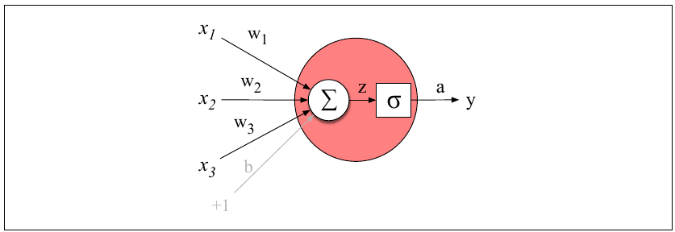
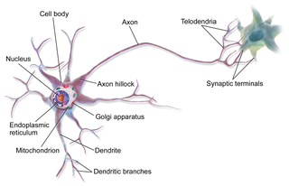
Neural models are made up of many neural units, organised into layers. The first neural models were Feed-Forward Networks. Due to the virtue of being able to incorporate many parameters, and due to semi-supervised learning, they were already a huge improvement over earlier models. Here is a simple set up, with one hidden layer for training a language model (used to predict the next word). It can also be used to learn embeddings.
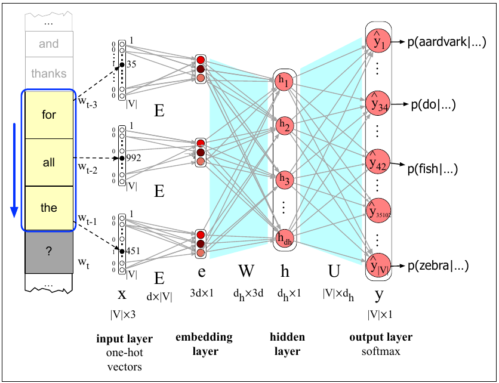
The next evolution in neural models was the ability to incorporate words in the recent history. For humans, this comes naturally. For instance, we know that this is grammatically correct:
The flights the airline was cancelling were full.
For neural models to have this ability, it was necessary to incorporate the hidden layers from recent words when processing the current word. Recurrent Neural Networks (RNNs) and Long-Short Term Memory (LSTM) networks had these features, but they were very slow to train. The major breakthrough came with the invention of the transformer architecture. The self-attention layer of these networks gave a word access to all preceding words in the training window, instead of just one. Most importantly. the training of these networks could be parallelised!
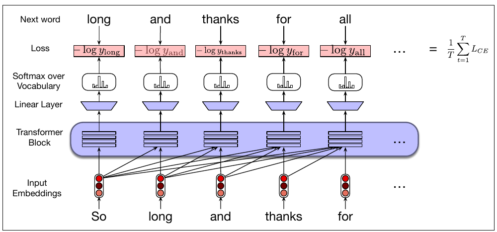
Here are some examples where transformers excel:
The keys to the cabinet are on the table.
The chicken crossed the road because it wanted to get to the other side.
I walked along the pond, and noticed that one of the trees along the bank had fallen into the water after the storm.
In the final sentence, the word bank has two meanings - how will a model know to decide the correct one? With transformers, because the full context of a word is captured along with it, it is possible to perform this disambiguation.
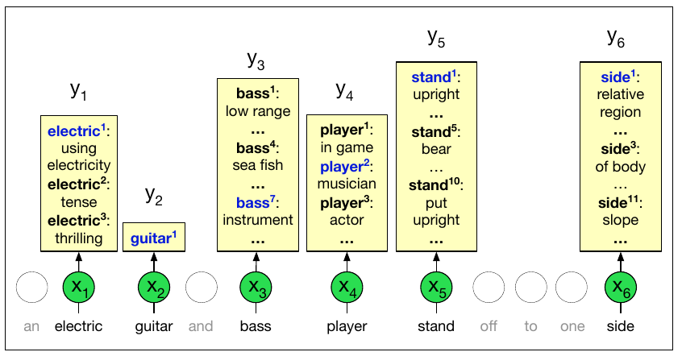
4.8 Applications
Hugging Face has spent a considerable effort to make Neural Language Models accessible and available to all with minimal coding. For starters, they have ensured that all their models are described in a standardised manner with model cards. Here is an example of a model card for BERT.
Moreover, they have developed easy to use pipelines. For NLP, the following tasks have mature pipelines:
- feature-extraction (obtaining the embedding of a text)
- ner
- question-answering
- sentiment-analysis
- summarization
- text-generation
- translation, and
- zero-shot-classification.
Sentiment Analysis
In this subsection, we shall utilise one of their sentiment analysis models on the wine reviews dataset. This is a transformer-based neural language model (BERT) that has been fine-tuned with data labelled with sentiments. All we have to do is feed in the sentence, and we will obtain a confidence score, and a sentiment label.
classifier = pipeline("sentiment-analysis",
model="distilbert/distilbert-base-uncased-finetuned-sst-2-english")
classifier(["I love this course!", "I absolutely detest this course."])Device set to use cpu[{'label': 'POSITIVE', 'score': 0.9998835325241089},
{'label': 'NEGATIVE', 'score': 0.9973570704460144}]Example 4.2 (Example: Wine Reviews Dataset)
The number of reviews we have is close to 120,000. Hence, computing the sentiments for each and every one will take a long time. Instead, we shall compute the sentiments for a sample (of size 20, where possible) from each variety of wine.
The following snippet samples 20 reviews from each wine type.
tmp_df = pd.DataFrame(columns= wine_reviews.columns)
# w = widgets.IntProgress(
# value=0,
# min=0,
# max=len(wine_reviews.variety.unique()),
# description='Progress: ',
# bar_style='', # 'success', 'info', 'warning', 'danger' or ''
# style={'bar_color': 'lightblue'},
# orientation='horizontal'
# )
# display(w)
for x,vv in wine_reviews.groupby(wine_reviews.variety):
grp_len = vv.shape[0]
if(grp_len >= 20):
vv = vv.sample(n=20, random_state=99)
tmp_df = pd.concat([tmp_df, vv], ignore_index=True)
# w.value += 1
review_list = list(tmp_df.description)/tmp/ipykernel_12351/2593812303.py:17: FutureWarning:
The behavior of DataFrame concatenation with empty or all-NA entries is deprecated. In a future version, this will no longer exclude empty or all-NA columns when determining the result dtypes. To retain the old behavior, exclude the relevant entries before the concat operation.
The next snippet computes the sentiment scores for those sampled reviews.
tmp_df['score'] = 0.00
tmp_df['label'] = ''
# w = widgets.IntProgress(
# value=0,
# min=0,
# max=tmp_df.shape[0],
# description='Progress: ',
# bar_style='', # 'success', 'info', 'warning', 'danger' or ''
# style={'bar_color': 'lightblue'},
# orientation='horizontal'
# )
# display(w)
for i,rr in enumerate(review_list):
tmp = classifier(rr)[0]
tmp_df.loc[i, 'score'] = tmp['score']
tmp_df.loc[i, 'label'] = tmp['label']
#w.value = i| label | NEGATIVE | POSITIVE | All | proportion |
|---|---|---|---|---|
| variety | ||||
| Loading ITables v2.3.0 from the internet... (need help?) |
These are the reviews for one of the varieties that had a proportion of positive reviews close to 50%.
for x in wine_reviews[wine_reviews.variety == 'Tempranillo Blanco'].description.values:
pp.pprint(x) ("Gold in color and lightly oxidized on the nose, and it's still young. Smells "
'heavy and creamy, like hay. Feels flat, with pickled flavors and mealy apple '
'on the finish. Runs plump, sweet and seems like an imposter for Chardonnay.')
('Oily, stalky, bready aromas are a bit tired. This has a chunky feel offset '
'by citric acidity. Briny, salty flavors of citrus fruits and lees are '
"lasting. For varietal Tempranillo Blanco, this isn't bad.")
('Maderized in color, this wine has a yeasty, creamy nose with baked '
"white-fruit aromas and caramel. It's OK in feel, with pickled, mildly briny "
'flavors of apple and apricot. The finish is showing some oxidization, '
'leading to a chunky, fleshy feel.')
("Waxy peach aromas seem slightly oxidized. It's round and citrusy on the "
'palate, but in a monotone way that fades to pithy white fruits and mealy '
"citrus. Shows some flashes of uniqueness and class; mostly it's wayward and "
'slightly bitter.')
('Forget the high price on this Tempranillo Blanco. Looking at the wine alone, '
"it's briny and stalky on the nose, with wiry lemon-like acids that push sour "
"orange flavors. Overall it's monotone, briny and citrusy.")
("A maderized color is apropos for the wine's fully mature, nutty nose. This "
'is big and cidery feeling, with apple and orange flavors. A finish of '
'vanilla, nuttiness and oxidation matches the color and aromas of this '
'interesting but midlevel Tempranillo Blanco.')
('Green grassy aromas are modest and watery. This feels oily, but with decent '
'acidity. Oxidized flavors of stone fruits finish wheaty, bland and eggy.')
('Rough, stalky, yeasty aromas are all over the map. Lemony acidity renders '
'this tight as a drum, while bitter, stalky flavors finish wheaty and bitter. '
'This Tempranillo Blanco is barely worth a go; the pleasure factor is at base '
'level.')
('Green aromas of herbs and tomatillo are harsh, rubbery and outweigh peach '
'and other stone-fruit scents. This Tempranillo Blanco is plump and fair on '
'the palate, while flavors of apple and peach are briny and finish with '
'controlled bitterness.')
Note
Do you agree with the classifications above? What would you investigate next?
Information Retrieval
In the NLP context, Information Retrieval (IR) refers to the task of returning the most relevant set of documents, when given a query string. Search engines, e.g. Google, are trained to perform fast and accurate IR. Typically, a long list of documents is returned, with the most relevant one on top.
Note
Pause for a moment, and consider how you would assess the performance of such a search engine.
Example 4.3 (Example: Wine Reviews Dataset)
A simple way to perform IR is to use cosine similarity to compute how close the given query vector is to the individual documents in the corpus.
The next snippet initialises a model for retrieving similar documents.
NLP corpora are typically very large. Before we can find matching documents, we build a similarity index, so that matches are returned quicker. We try something simple at first:
Which documents/reviews are similar to the first one?
These are the most similar reviews to review id 0. Of course, the first review itself is there! Let’s retrieve and print all the reviews similar to the first one.
('Aromas include tropical fruit, broom, brimstone and dried herb. The palate '
"isn't overly expressive, offering unripened apple, citrus and dried sage "
'alongside brisk acidity.')
("The nose isn't very expressive but reveals white flower and tropical fruit. "
'The simple palate delivers pineapple and lemon zest alongside brisk acidity.')
("The nose isn't very expressive but the palate eventually reveals raw red "
'berry, espresso, brimstone and grilled rosemary alongside astringent and '
'rather drying tannins.')
('This opens with aromas of pressed acacia flowers, ripe stone fruits and '
"dried sage. The palate isn't overly sweet, offering dried apricot, "
'wildflower honey and toasted almond notes.')
('Subdued aromas of Spanish broom and brimstone float from the glass. The '
'vertical palate offers yellow apple, citrus zest and mineral alongside crisp '
'acidity.')Now we try a new query of our own: “acidic chardonnay”. First we preprocess it, like we did the original documents.
Now we print the top 5 most similar reviews to our query.
q1_results = np.argsort(-sims)[:10]
#q1_results
#pp.pprint(wine_reviews.description.values[q1_results])
for x in q1_results[:5]:
pp.pprint(all_review_strings[x]) ('A standard Chardonnay, dry and nicely acidic, with citrus, pear, vanilla, '
'lees and oak flavors.')
('Dry and acidic, this Chardonnay has a herbaceous earthiness, plus flavors of '
'orange and pear.')
'This is thin and acidic, with flavors of sour cherry candy and spice.'
'This is acidic and sweet, with a medicinal taste.'
('Pungent up front, with green herb, white pepper and citrus aromas, this is '
'zesty and acidic on the palate, with a monotonous lemon flavor on the '
'finish. It turns more tart and acidic as it airs.')
Note
Try your favourite tastes, see if you discover a wine you like/dislike 🍷🍇🥂
Topic Modeling
The LDA (Latent Dirichlet Allocation) model assumes the following intuitive generative process for the documents:
- There is a set of \(K\) topics that the documents come from. Each document contains words from several topics. There is a probability mass function on the topics for each document.
- For each topic, there is a probability mass function for the distribution of words in that topic.
At the end of LDA topic modeling, we will be able to tell, for a particular (new or old) document: the weight combination of the topics for that document. For each topic, we would be able to tell the terms that are salient.
LDA only gives us the probabilistic weights - we have to interpret them ourselves. Suppose we decide to split the corpus into 10 topics. Let us investigate what these topics consist of.
lda1 = gensim.models.LdaModel(corpus= bow_corpus, num_topics=10, id2word=dct)
reviews_vis_data = gensimvis.prepare(lda1, bow_corpus, dct)
pp.pprint(lda1.show_topics())[ ( 0,
'0.081*"wine" + 0.033*"acidity" + 0.033*"drink" + 0.026*"ripe" + '
'0.024*"fruit" + 0.022*"fruits" + 0.019*"tannins" + 0.017*"rich" + '
'0.014*"character" + 0.014*"flavors"'),
( 1,
'0.048*"flavors" + 0.038*"finish" + 0.036*"aromas" + 0.021*"palate" + '
'0.020*"berry" + 0.017*"plum" + 0.013*"feels" + 0.012*"herbal" + '
'0.010*"notes" + 0.010*"nose"'),
( 2,
'0.040*"oak" + 0.037*"fruit" + 0.023*"finish" + 0.019*"flavors" + '
'0.013*"red" + 0.013*"tannins" + 0.013*"aromas" + 0.012*"palate" + '
'0.012*"cherry" + 0.011*"french"'),
( 3,
'0.030*"wine" + 0.025*"flavors" + 0.019*"pinot" + 0.017*"cherry" + '
'0.017*"fruit" + 0.012*"drink" + 0.012*"noir" + 0.010*"oak" + '
'0.010*"texture" + 0.009*"like"'),
( 4,
'0.039*"cabernet" + 0.025*"tannins" + 0.024*"blend" + 0.024*"black" + '
'0.022*"flavors" + 0.021*"merlot" + 0.021*"sauvignon" + 0.020*"wine" + '
'0.018*"blackberry" + 0.015*"chocolate"'),
( 5,
'0.028*"wine" + 0.026*"vineyard" + 0.022*"flavors" + 0.019*"oak" + '
'0.017*"acidity" + 0.016*"vanilla" + 0.012*"chardonnay" + 0.011*"rich" '
'+ 0.010*"toast" + 0.010*"valley"'),
( 6,
'0.038*"black" + 0.031*"cherry" + 0.030*"palate" + 0.026*"tannins" + '
'0.019*"aromas" + 0.016*"red" + 0.016*"nose" + 0.014*"pepper" + '
'0.014*"spice" + 0.013*"plum"'),
( 7,
'0.039*"fruit" + 0.035*"aromas" + 0.035*"wine" + 0.025*"spice" + '
'0.022*"flavors" + 0.017*"cherry" + 0.015*"notes" + 0.011*"followed" + '
'0.010*"pair" + 0.010*"bright"'),
( 8,
'0.025*"flavors" + 0.023*"apple" + 0.019*"citrus" + 0.019*"finish" + '
'0.019*"lemon" + 0.018*"wine" + 0.017*"palate" + 0.016*"peach" + '
'0.016*"fresh" + 0.015*"acidity"'),
( 9,
'0.045*"palate" + 0.039*"aromas" + 0.026*"white" + 0.023*"acidity" + '
'0.023*"offers" + 0.022*"note" + 0.021*"alongside" + 0.018*"opens" + '
'0.016*"flower" + 0.015*"hint"')]The output provides the most common terms that define each topic (remember: each topic is defined as a probability distribution over the vocabulary).
Note
What name would you give each topic?
We can also find out which topics a particular document is distributed over. For instance, the output below shows that words in document 0 are predominantly drawn from topics 2 and 5.
[(1, 0.087330736), (7, 0.13275942), (8, 0.21943033), (9, 0.53188884)]('Aromas include tropical fruit, broom, brimstone and dried herb. The palate '
"isn't overly expressive, offering unripened apple, citrus and dried sage "
'alongside brisk acidity.')A delightful visualisation from pyLDAvis allows us to understand the “distance” between topics, and the frequent words from each topic easily.
4.9 Interpretation of Neural Models
Neural models have achieved impressive performance on a number of language-related tasks. However, one criticism of them is that they are “black-box” models; we do not fully grasp how they work. This can lead to a mistrust of such models, with good reason. If we do not fully know how these models work, we would not know when they are might fail, or we might not know the reason when they do fail (or make an incorrect prediction). For this reason, a huge amount of research effort is currently directed towards understanding and interpreting neural models.
One approach is to identify which examples in the training set were most influential for predictions regarding particular test instances. For incorrect predictions, this could give us intuition on why the model is failing, and guide us to ways to fix it. Here is an example where it was possible to pinpoint why a model yielded incorrect sentiment prediction.
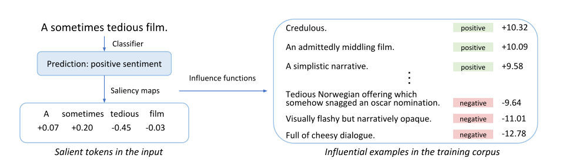
Another approach is to identify which parts of the test sentence itself were important to the eventual prediction. Imagine perturbing the test sentence in some ways, and studying how the prediction changed. In one study of a Question-Answering model, the question was modified by dropping the least important word, until the question was answered incorrectly. In this case, the study revealed something pathological about the model:
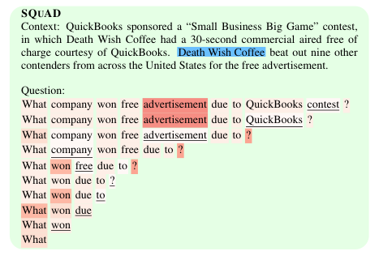
For transformers in particular, a great deal of study has focused on the weights that the attention layers pick up. By relating these to linguistic information, researchers try to infer the precise language-related information that models retain. For instance, it has been found that BERT learns parts of speech. It is also able to identify the dependencies between words.
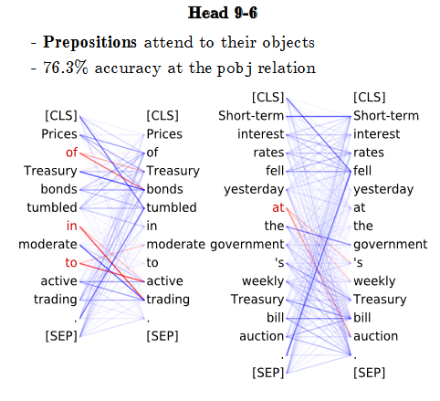
4.10 References
Video explainers
- Transformer models and BERT: A very good video from Google Cloud Tech on current neural models (11:37)
- Introduction to RNN
- Introduction to BERT
Website References
- Hugging Face course on transformers
- Gensim documentation: Contains tutorials as well.
- Using sklearn to perform LDA: We can also use scikit-learn to perform LDA.
- Visualising LDA: Contains sample notebooks for the visualisation.